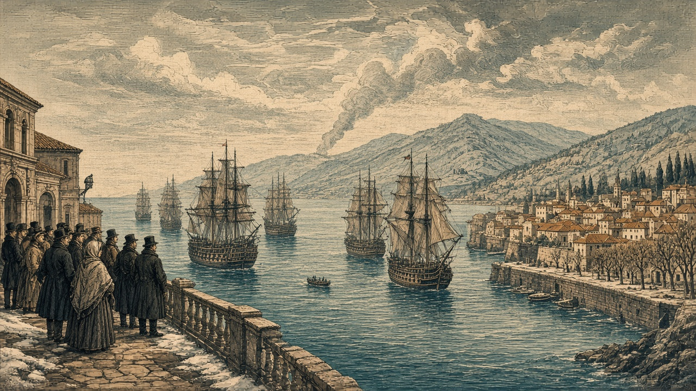

ナンリプ陥落 青海と橙原が開戦
桃谷の現代都市がオリョルッル領に 紅峰と銀嶺は遷都 橙原の部隊は全滅

【総合部】第189期、オリョルッル王国は桃谷連邦共和国の現代都市ナンリプ（43,45）を占領した。首都ナンサプ（41,43）に近い地点が敵領となり、桃谷の防衛線はさらに縮んだ。同じ期、予告どおり青海共和国と橙原自治共和国が開戦した。橙原はなのです主義人民共和国とも交戦しており、二正面を抱える。詳報は2面・3面・4面。
紅峰公国は首都を（41,52）から（41,51）へ移し、ローテンホルンの名を継いだ。銀嶺侯国も首都を（77,28）からモンタルジェント（76,29）へ移し、首都欄は陥落から復帰した。紅峰では町（42,52）がなのですに占領され食糧五万トンが徴発され、兵站基地（41,53）では予備兵千人が投降した。詳報は5面。
橙原の部隊が全滅 移民二万三千八百人
橙原自治共和国の部隊（45,54）は全滅した。なのですとの今期損害はなのです四千人、橙原八千八百人。青海との損害は青海千四百人、橙原二百人。橙原島から泰平天国島へ二万三千八百人が移住し、泰平は受け入れを決めた。国特集は8面のカペレナ王国。